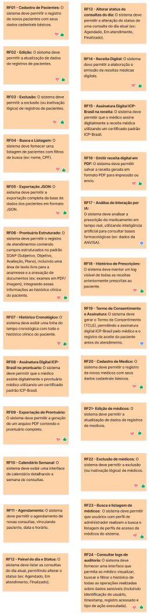

Planejamento e Quadro Figma
Esta página é dedicada ao acompanhamento do planejamento estratégico do projeto ProntoCare através do nosso quadro colaborativo (Figma JamBoard). O quadro é utilizado pela equipe como artefato central para a elicitação de requisitos, mapeamento de objetivos específicos, definição de características do produto (CPs), modelagem do backlog e dinâmicas de priorização.

Quadro Colaborativo do Figma
O quadro de desenvolvimento e organização de sprints está disponível para visualização e interação na janela abaixo. Mais do que registrar o progresso cronológico do projeto, este artefato evidencia a governança do processo ágil e desenvolvimento da matéria adotado pela equipe, demonstrando a distribuição de esforço, a dinâmica de priorização e a maturidade operacional do grupo ao longo das iterações.
Legenda do Estado dos Requisitos
No quadro colaborativo, cada requisito é marcado com selos na matriz de rastreabilidade (stamps) específicos que indicam o progresso e o status da sua homologação:
| Selo no Quadro | Significado | Descrição do Estado |
|---|---|---|
| DOD Feita | O requisito foi totalmente desenvolvido e atende os critérios de "Definition of Done". | |
| DOR Feita | O requisito foi revisado, validado e atende os critérios de "Definition of Ready". | |
| Fora do MVP | O requisito foi despriorizado ou postergado, não integrando o escopo do MVP atual. | |
| Nenhum | Não Iniciado | O requisito ainda não foi planejado ou trabalhado em nenhuma Sprint da equipe. |
Você também pode visualizar o board em tela cheia diretamente no Figma clicando aqui.
Acompanhamento do Cronograma e Execução
A tabela a seguir apresenta uma visão geral do cronograma planejado para o projeto ProntoCare, o status de cumprimento de cada Sprint e os links diretos para as atas e gravações das cerimônias (Planning/Review):
| Sprint | Período | Objetivo Principal | Status | Ata e Vídeos |
|---|---|---|---|---|
| Sprint 0 | 19/04 - 02/05 | Configuração e arquitetura inicial | Cumprido ✅ | Ata e Vídeos |
| Sprint 1 | 03/05 - 09/05 | Cadastro de pacientes | Cumprido ✅ | Ata e Vídeos |
| Sprint 2 | 10/05 - 16/05 | Prontuário SOAP (Estrutura base) | Cumprido ✅ | Ata e Vídeos |
| Sprint 3 | 17/05 - 23/05 | Histórico clínico e protocolos | Cumprido ✅ | Ata e Vídeos |
| Sprint 4 | 24/05 - 30/05 | Integridade documental (Cadeia criptográfica) | Cumprido ✅ | Ata e Vídeos |
| Sprint 5 | 31/05 - 06/06 | Exportação de dados e Auditoria | Cumprido ✅ | Ata e Vídeos |
| Sprint 6 | 07/06 - 13/06 | Operação offline (Armazenamento local) | Cumprido ✅ | Ata e Vídeos |
| Sprint 7 | 14/06 - 20/06 | Sincronização automática | Cumprido ✅ | Ata e Vídeos |
| Sprint 8 | 21/06 - 27/06 | Agenda, Consultas e Segurança | Cumprido ✅ | Ata e Vídeos |
| Sprint 9 | 28/06 - 02/07 | Emissão de documentos, Homologação e Entrega Final | Cumprido ✅ | Ata e Vídeos |
Evidência de Validação Clínica e Controle de Prontidão (DoR)
Para fins de governança ágil e atendimento a requisitos de auditoria, detalham-se abaixo as evidências de validação das histórias clínicas com o cliente e a garantia de integridade do DoR para entrada em sprint:
- Evidência de Validação de Histórias Clínicas (Dr. Rogério): A validação e o aceite dos critérios de aceitação e do escopo de todas as histórias clínicas (como prontuário SOAP, histórico clínico, receitas e segurança) ocorreram de forma integrada durante a Reunião de Elicitação e Priorização do MVP (24/04/2026) com o Dr. Rogério Duarte. Nessa reunião, o cliente realizou a priorização quantitativa por valores de negócio e homologou o escopo das USs que comporiam as sprints subsequentes.
- Evidência Registrada: Ata da Reunião (Sprint 0) e a gravação em vídeo disponível em Vídeo da Reunião de Elicitação (YouTube).
- Controle de Entrada em Sprint (USs sem DoR completo): Não houve histórias de usuário (User Stories) que entraram em desenvolvimento sem o DoR completo. A conformidade com os critérios do DoR foi atestada e confirmada previamente como parte do DoR dos próprios requisitos funcionais associados (RFs), durante as dinâmicas de refinamento (grooming) e planejamento coletivo, assegurando que nenhuma funcionalidade clínica fosse iniciada sem o claro entendimento e consentimento do cliente.
Matriz Operacional de Entregas sem Pull Request
Contexto e propósito: Durante as Sprints 1 a 7, as entregas foram realizadas por meio de desenvolvimento em branches próprias, que eram mescladas (merge) diretamente na branch
devapós os desenvolvedores notificarem o grupo de que a tarefa estava concluída (Done). Contudo, nenhum incremento de código desse período passou pelo fluxo formal de Pull Request (PR) ou teve Issue associada. Essa prática violou o DoD definido no documento de DoR e DoD (item Revisão Colaborativa) e os princípios de rastreabilidade do ScrumXP durante todo o período inicial do projeto. O processo formal de PR foi adotado a partir das Sprints 8 e 9. Esta seção registra formalmente a dívida técnica acumulada, com causas-raiz e impactos por sprint, para fins de auditoria e não-repetição.
| US / RF Entregue | Fase / Sprint da Entrega | Status de Revisão (PR) | Justificativa Técnica/Processual da Ausência de PR | Impacto no Projeto |
|---|---|---|---|---|
| US01 / RF01 – Cadastrar pacientes | Sprint 1 | ❌ Sem PR/Issue — merge na dev | As branch protection rules não estavam configuradas. A equipe desenvolveu em branch própria e mesclou na dev após notificar o grupo. Os integrantes estavam em curva de aprendizado inicial com o ScrumXP. | Alto. Código inicial da porta de entrada de dados dos pacientes. Riscos associados a validações de entrada e consistência de dados não revisados por pares. |
| US02 / RF02 – Editar registros de pacientes | Sprint 1 | ❌ Sem PR/Issue — merge na dev | Ausência de proteção técnica de branches na fase de inicialização do projeto e acúmulo de entregas do núcleo principal de CRUD de pacientes. Desenvolvimento em branch própria mesclado na dev. | Alto. Edição direta de atributos do paciente, o que poderia corromper registros no banco. Risco de regressão na persistência de dados sensíveis sem revisão. |
| US03 / RF03 – Inativar registros de pacientes (Excluir) | Sprint 1 | ❌ Sem PR/Issue — merge na dev | Ausência de proteção de branch. A inativação lógica foi construída em branch e mesclada diretamente na dev após aviso de finalização ao grupo. | Médio. Risco de exclusão física dos dados em vez de inativação lógica regulatória se não houvesse revisão por pares. |
| US04 / RF04 – Buscar pacientes | Sprint 2 | ❌ Sem PR/Issue — merge na dev | A equipe operava sob a inércia do desenvolvimento em branches com merge direto na dev sem abertura de PRs/Issues, por falta de um responsável designado para a gerência de branches. | Médio. Funcionalidade de consulta e filtragem. A falta de PR impediu a otimização de queries de busca de pacientes por CPF/nome. |
| US05 / RF05 – Exportar base JSON | Sprint 5 | ❌ Sem PR/Issue — merge na dev | CI/CD e proteção de branch ainda não estavam integrados de forma restritiva no GitHub, permitindo merges diretos na dev sem PR para agilizar a entrega de portabilidade da base de dados. | Alto. Risco de vazamento de dados caso a exportação gerasse informações além do escopo permitido. Ausência de auditoria de código sobre o arquivo gerado. |
| US06 / RF06 – Registrar prontuário SOAP | Sprint 2 | ❌ Sem PR/Issue — merge na dev | O time continuou com a prática de merges diretos na dev sem abertura de PR por falta de bloqueio de branches no GitHub, priorizando a entrega rápida da anamnese livre e eixos SOAP. | Crítico. Módulo clínico com alta densidade de regras do CFM e segurança. A ausência de revisão elevou o risco de erros na integridade ou permissão de alteração (SOAP) do prontuário. |
| US07 / RF07 – Histórico clínico (Linha do tempo) | Sprint 3 | ❌ Sem PR/Issue — merge na dev | Pressão para apresentar o layout de linha temporal assistencial funcional ao cliente clínico, resultando em merge na dev sem processo formal de PR/Issue. | Alto. Risco de quebra de layout responsivo (RNF06) in diferentes viewports e inconsistência visual não detectados por revisão. |
| US08 / RF08 – Assinar prontuário (ICP-Brasil) | Sprint 9 | ✅ Com Pull Request e Issue vinculada | Adotado o processo de revisão com PR e Issue vinculada para garantir a autoria, a integridade e a validade legal do módulo de assinaturas digitais brasileiras. | Nenhum. Funcionalidade de alta importância assistencial e regulatória auditada e integrada via pipeline de CI/CD. |
| US09 / RF09 – Exportar prontuário PDF | Sprint 5 | ❌ Sem PR/Issue — merge na dev | A equipe optou por acelerar o desenvolvimento local em branch e mergear na dev sem controle técnico de revisão para atingir o marco de exportação/impressão do prontuário. | Alto. Geração de documento legal que necessita de hash de integridade SHA-256 no rodapé (RNF08). Falta de peer review para validar o cálculo e a fidelidade visual do PDF. |
| US10 / RF10 – Visualizar calendário | Sprint 8 | ✅ Com Pull Request e Issue vinculada | Fluxo de pull request adotado com sucesso após refinamento técnico de planejamento da Sprint 8 para a gestão da grade da agenda do médico. | Nenhum. Revisão colaborativa garantiu integridade das navegações temporais do calendário sem conflito de layout. |
| US11 / RF11 – Agendar consultas | Sprint 8 | ✅ Com Pull Request e Issue vinculada | Processo de Pull Request e abertura de branches para a marcação de consultas executado com aprovação técnica da equipe na Sprint 8. | Nenhum. O código da lógica de concorrência e teleconsulta passou por revisão colaborativa e testes de fluxo. |
| US12 / RF12 – Listar consultas do dia | Sprint 8 | ✅ Com Pull Request e Issue vinculada | Desenvolvimento rastreável através de Issue e Pull Request no Github, em conformidade com o DoD de revisão por pares. | Nenhum. Listagem de consultas diárias validada técnica e funcionalmente. |
| US13 / RF13 – Alterar status da consulta | Sprint 8 | ✅ Com Pull Request e Issue vinculada | Fluxo de Pull Request formalmente aplicado durante a Sprint 8 para o controle de estados cadastrais dos atendimentos. | Nenhum. Transição de status da consulta (Agendado/Atendimento/Finalizado) validada por time de revisão. |
| US14 / RF14 – Elaborar receita digital | Sprint 9 | ❌ Sem PR/Issue — merge na dev | A equipe de desenvolvimento, sob pressão para a entrega final da receita e integração de dados médicos no cabeçalho do PDF, realizou o merge da branch na dev sem passar pelo fluxo completo de PR/Issue. | Alto. Módulo básico para prescrição. Alterações de lógica assistencial inseridas sem revisão colaborativa, aumentando riscos de erros nos campos das receitas. |
| US15 / RF15 – Assinar receita (ICP-Brasil) | Sprint 9 | ✅ Com Pull Request e Issue vinculada | Adotado o processo formal de Pull Request e Issue para a assinatura legal da receita digital (ICP-Brasil). | Nenhum. Funcionalidade de alta criticidade segurança auditada inteiramente por revisão colaborativa. |
| US16 / RF16 – Emitir receita PDF | Sprint 9 | ❌ Sem PR/Issue — merge na dev | Mesma causa-raiz do módulo associado US14: a pressa de fechamento do PDF do receituário com chancela visual levou ao merge direto na dev a partir de branch própria. | Alto. Risco de má-formatação no documento de receita gerado ou ausência de validação de dados obrigatórios exigidos no CFM. |
| US18 / RF18 – Histórico de receitas | Sprint 5 | ❌ Sem PR/Issue — merge na dev | A inércia no fluxo manual de merges diretos na dev e pressa no fechamento dos históricos remanescentes causou a ausência de PR/Issue para este recurso de visualização. | Médio. Risco de falha de segurança na API do histórico clínico, com possibilidade de leitura de dados por perfis não médicos. |
| US20 / RF20 – Cadastrar médicos | Sprint 2 | ❌ Sem PR/Issue — merge na dev | Inexistência de barreira técnica automatizada no repositório. O cadastro de médicos foi desenvolvido em branch e integrado diretamente na dev após comunicação de conclusão. | Alto. Risco de duplicidades ou falhas em regras de negócio (como CRM-UF) sem verificação redundante. |
| US21 / RF21 – Editar perfis de médicos | Sprint 1 | ❌ Sem PR/Issue — merge na dev | Proteção de branch desativada. O time focou no desenvolvimento paralelo ágil dos perfis administrativos em branch própria e mergeou na dev após notificação. | Médio. Alterações críticas na estrutura cadastral médica (validando CRM-UF) não foram inspecionadas por outros membros, podendo induzir bugs no banco. |
| US22 / RF22 – Inativar perfis de médicos | Sprint 1 | ❌ Sem PR/Issue — merge na dev | Inexistência de regras de segurança técnica de branch na Sprint 1. O recurso foi feito em branch e integrado diretamente na dev após aviso ao grupo. | Alto. Risco de contas de profissionais inativas mantidas com acesso indevido por debaixo dos panos. |
| US23 / RF23 – Buscar perfis de médicos | Sprint 1 | ❌ Sem PR/Issue — merge na dev | Fluxo de merge na dev a partir de branch própria utilizado como padrão inicial por todos os membros para agilizar consultas internas após aviso ao grupo. | Baixo. Funcionalidade de leitura simples; o risco primordial é a ineficiência de busca ou exibição menor de atributos. |
| US24 / RF24 – Consultar logs de auditoria | Sprint 5 | ❌ Sem PR/Issue — merge na dev | Falta de configuração de proteção contra merges diretos na branch dev e inércia do fluxo de entrega rápida em branch sem processo formal de PR. | Crítico. Log de auditoria e segurança. A ausência de revisão de código compromete a auditoria do próprio mecanismo de auditoria de dados e verificação de integridade/mascaramento de CPF. |
Ações corretivas adotadas a partir da Sprint 8 e 9:
- Proteção de branch ativada: As branches principais (
main/dev) passaram a exigir, obrigatoriamente, ao menos 1 (um) PR aprovado e a passagem bem-sucedida do pipeline de CI/CD para que qualquer merge seja autorizado. - DoD operacionalizado como etapa bloqueante: O critério de Revisão Colaborativa do DoD foi integrado ao fluxo de trabalho como gate obrigatório, não sugestivo. Nenhuma US é considerada "Pronta" sem PR aprovado e mergeado.
- Pipeline de CI/CD configurado: Os status checks do GitHub Actions foram habilitados para bloquear merges em caso de falha nos testes automatizados, eliminando a possibilidade técnica de merge direto sem PR.
Histórico de Revisões
| Data | Versão | Descrição | Autor |
|---|---|---|---|
| 2026-06-30 | 1.0 | Criação do documento de planejamento com o quadro colaborativo, legenda de estados e justificativas regulatórias. | Prontuariantes |
| 2026-07-01 | 1.1 | Incorporação das seções de Evidência de Validação Clínica e Controle de Prontidão (DoR) e Matriz Operacional de Entregas sem Pull Request. | Prontuariantes |